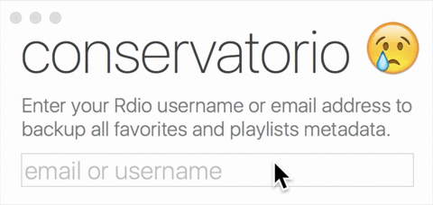
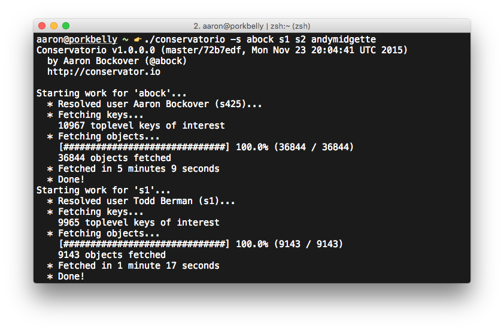

On November 16, 2015, it was announced that Rdio would be shutting down for good.
As one of the very first users of Rdio since before it was public, and one of the original mobile developers at Rdio, I (@abock) was deeply saddened by the news like many others.
After a week of sulking, I decided to spend the weekend hacking on a tool to export roughly six years of personal collection data to ensure it wasn't lost once Rdio finally shuts down.
I have decided to release the tool publicly, including its source code.
Announcing Conservatorio!
Conservatorio is a tool to completely export all of your Rdio account's collection metadata into a single file that you control. Your favorites and synced tracks in your collection are safe, as are your tediously curated playlists.

In the future Conservatorio may be able to import the exported data into other streaming music services, but for now the only goal of Conservatorio is to simply export your data out of Rdio before the service shuts down.
Mac App
The simplest way to use Conservatorio on your Mac is to download the Mac App above. Simply enter your Rdio username or email address and let it run. Large collections may take a few minutes to complete.
Requires Mac OS X 10.10 or newer.
Console App
Conservatorio is also available as a console application for both Mac and Windows. The console application supports fetching multiple users and users that a user is following. This is useful for automatically backing up your friends' collections too.

FAQ
Backing up!
Once Conservatorio generates the file with your exported metadata, you are highly encouraged to properly back up the file to Dropbox, iCloud, a USB stick, etc. Conservatorio makes no effort to do this for you!
Run it again!
While the Rdio service is still operational, remember to re-run Conservatorio if you make changes to your collection or playlists. Remember to also check back for updates to Conservatorio itself in case bugs are discovered and fixed.
Can Conservatorio import my collection to Spotify, Apple Music, etc?
No, not currently. Conservatorio simply exports your Rdio data so that it's safe once the Rdio service shuts down for good.
A future update to Conservatorio might offer importing of your exported data into other music services.
It is useful to note that ISRC and UPC data is exported for tracks and albums respectively, which should easy importing into other services in the future.
Why does Conservatorio tell me "User is protected"?
Currently Conservatorio cannot access protected Rdio accounts. If you wish to use Conservatorio, you will need to log in to your Rdio account and make your account public.
Does Conservatorio save audio?
No. Conservatorio saves only collection metadata. Saving audio would be stealing. Stealing is illegal.
Something isn't working!
File a GitHub issue with the username/email address of the Rdio account you're trying to export and I'll try to take a look at it!
Will there be a mobile app?
No mobile app is planned, but Conservatorio is open source on GitHub, so maybe someone will contribute one!
Will there be a Windows app?
No Windows GUI app is planned, but Conservatorio is open source on GitHub, so maybe someone will contribute one!
You should be able to use the console version on Windows however.
I use Linux on my desktop. What can you offer me?
Download the Linux/Windows console app and run it like
mono conservatorio.exe abockfrom your shell of choice. And yes, you need Mono. Sorry not sorry.
Why isn't Conservatorio a web app?
Because it isn't.
What is the data format Conservatorio exports?
Conservatorio retains the original JSON structure of all objects as provided by Rdio verbatim. This is a well defined format that is easy to comprehend even without documentation.
Conservatorio defines its own easy to understand container for associating keys with users and packing all objects.
The exported data can easily be consumed by additional tools to one day transform the data into something useful (e.g. import into Spotify, Apple Music, etc.).
How does Conservatorio work?
Conservatorio uses the public Rdio API to gather all data. Top-level objects (playlists and favorited/synced tracks) in an Rdio user's account are traversed recursively for any related objects (e.g. a playlist's tracks or a track's album and artist). All objects are then fetched with complete metadata. Objects are stored by Conservatorio in the native JSON format provided by Rdio itself.